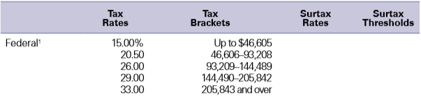
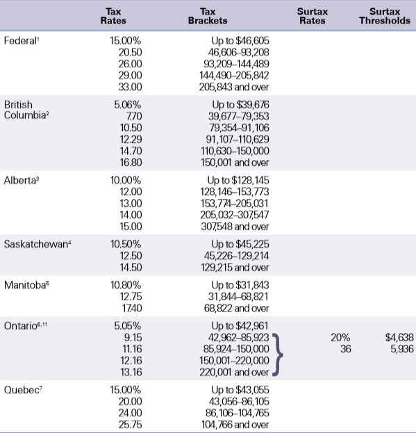
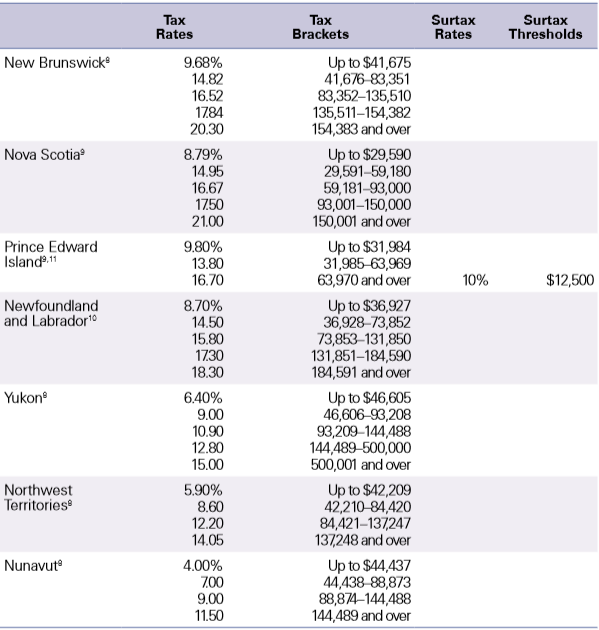

Tax rates/brackets by year
2019
Federal rates
There are seven federal tax brackets for 2019: 10%, 12%, 22%, 24%, 32%, 35% and 37%. The bracket depends on taxable income and filing status.
Provincial/territorial tax rates
In additional the the federal rate, you pay a provinicial/territorial rate, based on (your address on December 31?).
 Prior years
To find income tax rates from previous years, see the Income Tax Package for that year. You can find the federal tax rates on Schedule 1. You will find the provincial or territorial tax rates on Form 428 for the respective province or territory (all except Quebec). To find the Quebec provincial tax rates, go to Income tax return, schedules and guide (Revenu Québec Web site).